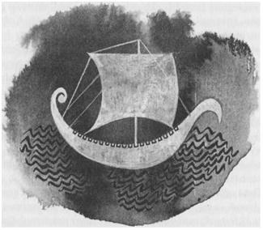

İKİ: GÖLGE

Ged, büyük bir büyücünün çırağı olarak, hemen gücün sırrına erip, ona hâkim olacağını sanmıştı. Hayvanların dillerini, ormanın yapraklarının söylediklerini anlayacağını sanmıştı; sözüyle rüzgârı etkileyeceğini, istediği her kılığa gireceğini... Belki de ustasıyla beraber Re Albi'ye gitmek için geyik olup koşacak veya kartal olup dağların üstünden uçacaklardı.
Fakat hiç de öyle olmadı. Önce Vadi'den aşağı, sonra da yavaş yavaş dağı dolanarak, güneye ve batıya doğru, küçük köylerde kendilerine sunulan yerlerde ya da doğanın koynunda geceleyerek dolaştılar; yoksul gezgin sihirbazlar, tamirciler veya dilenciler gibi. Hiç de öyle gizemli yerlere gitmediler. Hiçbir şey olmadı. İlk başlarda Ged'in sabırsız bir korkuyla baktığı büyücünün meşe asası, anlaşılan yürürken kullanmak için yapılmış sağlam bir bastondan başka bir şey değildi. Aradan üç gün geçti, dört gün geçti, yine de Ogion, Ged'in gördüğü kadarıyla ne bir büyücülük yaptı, ne de ona bir tanecik isim, tek bir rün veya tılsım öğretti.
Ogion çok sessiz bir adam olduğu halde, son derece yumuşak ve sakindi; öyle ki sonunda Ged ona karşı duyduğu korkuyu yenerek, birkaç günde ustasına "Benim çıraklığım ne zaman başlayacak acaba?" diye sorabilecek kadar cesaretlendi.
"Başladı," dedi Ogion.
Sanki Ged'in söyleyecek bir şeyi varmış da söyleyemiyormuş gibi bir sessizlik oldu. Sonra söyledi: "Ama daha hiçbir şey öğrenmedim!"
"Çünkü benim ne öğrettiğimi henüz keşfedemedin," diye cevap verdi büyücü, Ovark ve Wiss arasındaki yüksek geçitte yoluna kararlı ve büyük adımlarla devam ederek. Çoğu Gontlu gibi esmer bir adamdı, koyu bakır renginde; gri saçlı, bir tazı kadar ince, dayanıklı ve yorulmak bilmez. Seyrek konuşur, az yer ve daha da az uyurdu. Gözleri ve kulakları çok keskindi; yüzünde her zaman, bir şeyleri dinliyormuş gibi bir ifade taşıyordu.
Ged ona cevap vermedi. Bir büyücüye cevap vermek her zaman o kadar kolay değildir.
"Tılsımlar yapmak istiyorsun," dedi Ogion, büyük adımlarla yürürken. "O kuyudan çok su çektin. Bekle. Erkeklik, sabretmek demektir. Ustalık ise dokuz kez sabretmek demektir. Yolun kenarındaki o ot nedir?"
"Samançiçeği."
"Ya bu?"
"Bilmiyorum."
"Ona dörtyaprak derler." Ogion asasının bakır ucunu cılız otun dibine batırarak durmuştu, böylece Ged bitkiye yakından baktı; bitkiden kuru bir tohum zarfı kopardı ve Ogion başka bir şey söylemediği için sonunda sordu: "Ne işe yarar Usta?"
"Bildiğim kadarıyla hiçbir işe."
Yola devam ederlerken Ged tohum zarfını elinde tutuyordu, sonra fırlattı attı.
"Dörtyaprağı her mevsimde, yaprağıyla, çiçeğiyle, köküyle, kokusundan, görünüşünden ve tohumundan tanıyacak hale gelince, o zaman gerçek ismini öğrenebilirsin; varlığının ne olduğunu kavradığın için. Bu da kullanımını bilmekten daha önemlidir. Sonuç olarak, sen ne işe yarıyorsun? Ya da ben? Gont Dağı bir işe yarar mı? Ya da Açık Deniz?" Ogion yarım mil daha gittikten sonra nihayet "Duyabilmek için susmak gerekir," dedi.
Oğlan kaşlarını çattı. Aptal yerine konmaktan hoşlanmıyordu. Sonunda Ogion ona bir şey öğretmeye razı olur umuduyla, içerlemesini ve sabırsızlığını bastırarak, itaatkâr olmaya çalıştı. Bir şeyler öğrenmek ve güç kazanmak için büyük bir açlık duyuyordu. Yine de ona, bir şifalı ot toplayıcısı veya köy sihirbazıyla yürüseydi daha çok şey öğrenirdi gibi gelmeye başladı. Ve dağı dolanıp batıya, Wiss'ten sonraki ıssız ormanların içlerine doğru gittikçe, bu büyük Büyücü Ogion'un büyüklüğünden ve sihrinden gitgide daha çok kuşkulanmaya başladı. Çünkü yağmur yağdığında Ogion, her basit iklimcinin bildiği, fırtınayı uzaklaştırmaya yarayan büyülerden birisini bile yapmadı. Enlades ve Gont gibi sihirbazı bol ülkelerde, yağmur bulutlarının bir tılsımdan bir tılsıma ilerleyerek, sonunda yükünü huzur içinde denize boşaltıncaya kadar, yavaş yavaş bir yandan bir yana, bir yerden bir yere hareket ettiğini görebilirsiniz. Oysa Ogion yağmurun yağacağı yere yağmasına izin veriyordu. Ogion büyük bir köknar ağacı bulup altına uzandı. Ged ise sular süzülen çalıların arasına ıslak ve mutsuz kıvrıldı; güce sahip olup da onu kullanmayacak kadar akıllı olmanın ne işe yaradığını merak etti ve Vadi'deki iklimcinin yanına, en azından kuru yerde uyuyabileceği bir yere çırak gitmiş olmayı diledi. Düşüncelerinin hiçbirini açıklamadı. Bir tek söz söylemedi. Ustası gülümsedi ve yağmur altında uykuya daldı.
Gont tepelerine ilk karın düşmeye başladığı Gündönümü'ne doğru, Ogion'un köyü Re Albi'ye vardılar. Overfell'in yüksek kayalarının kıyısına kurulmuş olan kasabanın adı Şahin Yuvası anlamına geliyordu. Aşağıya bakınca insan, derin körfezi, Gont Limanı'nın kulelerini, körfezin ağzından Armed Kayalıkları arasından gemilerin giriş çıkışlarını görebiliyordu. Deniz üzerinden iyice batıya bakınca, İç Adalar'ın en doğusundaki ada olan Oranea'nın mavi dağları da seçilebiliyordu.
Büyücünün evi, bir ateş çukuru yerine ocağı ile bacası olan ahşaptan sağlamca yapılmış büyük bir ev olduğu halde, Onakçaağaç köyünün kulübelerine benziyordu: Bir köşesine keçiler için de yer ayrılmış, bir tek odadan ibaretti. Odanın batı duvarında, Ged'in yattığı bir girinti vardı. Ot şiltesinin üzerinde, denize bakan bir pencere vardı; fakat kışları batıdan ve kuzeyden gelen kuvvetli rüzgârlara karşı kepenklerinin genellikle kapalı olması gerekiyordu. Ged kışı, evin karanlık sıcağında, dışardaki yağmurun ve rüzgârın sesini veya karın sessizliğini dinleyerek ve Hard dilinin Altı Yüz Rünü'nü yazmayı ve okumayı öğrenerek geçirdi. Ged bu bilgileri öğrenmekten çok mutluydu; çünkü bunları bilmeden tılsım ve büyülerin sadece ezberlenmesi, insana tam anlamıyla bir ustalık kazandırmıyordu. Adalar Diyarı'nın Hard dili, diğer dillerden farklı olarak büyülü bir güce sahip olmadığı halde, kökleri varlıkların gerçek adlarını aldıkları Kadim Lisan'a dayanıyordu. Bu lisanı anlamak için de, dünya adaları ilk olarak denizden çıktıkları zaman yazılmış olan Rünlerle işe başlamak gerekiyordu.
Hâlâ, hiçbir büyü, hiçbir olağandışı olay görmemişti. Bütün kış boyunca Rün kitabının ağır sayfalarının karıştırılmasından, yağmur ve karın yağmasından başka hareket olmamıştı. Bir de Ogion, buz gibi havalarda yaptığı orman gezilerinden veya keçilerinin bakımından döner, çizmelerindeki karı silkip sessizce ateşin karşısında otururdu. Büyücünün, uzun ve dinleyen sessizliği odayı ve Ged'in aklını doldururdu, öyle ki bazen kelimelerin nasıl söylendiklerini unuttuğunu zannederdi Ged; en sonunda Ogion konuşunca, ona, sözcükleri Ogion hemen o anda, ilk kez icat ediyormuş gibi gelirdi. Yine de söylediği sözler, öyle önemli konularda olmazdı da ekmek, su, hava ve uyku gibi basit şeyler olurdu.
Canlı ve parlak bahar ayları gelince, Ogion Ged'i, sık sık Re Albi'nin yukarlarındaki çayırlardan şifalı otlar toplamaya yolladı ve bütün gününü yağmur suyuyla dolmuş derelerin kenarlarında, ormanlarda ve güneş altındaki ıslak yeşil tarlalarda gezerek geçirmesi için serbest bırakarak, istediği kadar oyalanabileceğini söyledi. Ged her seferinde sevinçle gidip akşama kadar dışarda kaldı, fakat şifalı otları da tümüyle aklından çıkarmadı. Tırmanırken, gezerken, sularda ve çamurlarda yürürken, keşfederken, bir yandan da otlara dikkat ediyor ve eve hep biraz ot götürüyordu. Bir gün 'kutsal beyaz' denen bir çiçeğin bol bulunduğu iki dere arasında kalan bir çayırlığa geldi; bu çiçekler nadir bulunduğundan ve şifacılar bunlara değer verdiğinden, ertesi gün de aynı yere gitti. Ondan önce bir başkası oraya gelmişti bu kez; daha önce görmüş olduğu bir kız; Re Albi Lordu'nun kızı. Ged onunla konuşmayacaktı ama kız Ged'e doğru gelip, onu tatlı tatlı selamladı: "Seni tanıyorum, sen Çevik Atmaca’sın, büyücümüzün evlatlığı. Bana büyücülük hakkında bir şeyler söyler misin?"
Ged kızın beyaz eteklerinin süpürdüğü beyaz çiçeklere baktı; ilk başlarda utandı, suratını astı ve zar zor cevap verdi. Fakat kız, yavaş yavaş onu da rahatlatan umursamaz, ısrarlı ve açık sözlü bir şekilde konuşmaya devam etti. Aşağı yukarı onun yaşlarında, uzun boylu, neredeyse beyaz tenli denecek kadar solgun bir kızdı. Köyde, annesinin Osskil veya öyle yabancı bir adadan gelmiş olduğu söyleniyordu. Saçı dümdüz, siyah bir şelâle gibi omuzlarına dökülüyordu. Ged kızı çok çirkin buldu ama konuştukça, giderek artan bir arzuyla onu mutlu etmek, onun takdirini kazanmak istedi. Kız Ged'e, Karglı savaşçıları yenmelerine neden olan sis ile yaptığı numaraların tüm öyküsünü anlattırdı. Çok şaşırmış ve takdir etmiş gibi dinledi ama hiç onu öven sözler söylemedi. Bir süre sonra da başka bir dala atladı: "Hayvanları ve kuşları çağırabilir misin?" diye sordu.
"Çağırabilirim," dedi Ged.
Çayırın yukarısındaki uçurumda bir şahin yuvası olduğunu biliyordu; kuşu adıyla çağırdı. Kuş geldi ama koluna konmadı, belli ki kızın varlığından ürkmüştü. Bir çığlık attı, çizgili geniş kollarıyla havayı dövüp göklere yükseldi.
"Şahinin gelmesini sağlayan bu tür efsunlara ne diyorsunuz?"
"Çağrı büyüsü."
"Ölülerin ruhlarını da, sana gelmeleri için çağırabilir misin?"
Ged, kız bu soruyu sorunca, şahin tam anlamıyla onun çağrısına itaat etmediği için, kendisiyle eğlendiğini düşündü. Kızın kendisiyle eğlenmesine izin veremezdi. "Dilersem çağırabilirim," dedi sakin bir sesle.
"Ruhları çağırmak zor ve tehlikeli değil midir?"
"Zor olmasına zor. Tehlikeli mi, bilemem." Omuzlarını silkti.
Bu kez kızın gözlerinde bir takdir izi olduğuna, hemen hemen emindi. "Bir aşk efsunu yapabilir misin?"
"O ustalık isteyen bir şey değil ki."
"Doğru," dedi kız, "her köy cadısı bunu yapabilir. Dönüşüm büyüleri yapabilir misin peki? Büyücülerin görüntülerini değiştirdiklerini söylüyorlar, sen de yapabilir misin?"
Bir kez daha kızın, soruyu alay etmek için sorup sormadığına emin olamadı; bir kez daha, "dilersem yaparım," diye cevap verdi.
Kız, kendisini dilediği herhangi bir şeye çevirmesi için -ister bir şahine, ister bir boğaya, ister ateşe, isterse de bir ağaca- yalvarmaya başladı. Kızı ustasının kullandığı, kısa, gizemli sözlerle atlattı; fakat kız onu tatlı sözlerle kandırınca, açıkça reddetmeyi bilemedi. Ayrıca kendisi de atıp tuttuklarına inanıp inanmadığını pek bilemiyordu. Ustası büyücünün onu evde beklediğini söyleyerek kızdan ayrıldı ve ertesi gün çayıra gitmedi. Fakat bir gün sonra kendi kendine, açan çiçeklerden biraz daha toplaması gerektiğini söyleyerek, bir kez daha gitti. Kız oradaydı; birlikte kutsal beyaz tomurcukları toplayarak çamurlu çimlerin üzerinde yalınayak koştular. İlkbahar güneşi parlıyor, kız da onunla eski köyündeki bir keçi çobanı kadar neşe içinde konuşuyordu. Kız tekrar sihirbazlık hakkında sorular sordu ve Ged'in anlattığı her şeyi gözlerini faltaşı gibi açarak dinledi; böylece oğlan tekrar böbürlenmeye başladı. Derken kız ona bir Dönüşüm büyüsü yapıp yapamayacağını sordu. Ged kızı atlatınca da saçlarını yüzünden arkaya doğru atarak oğlana baktı ve "Korkuyor musun?" dedi.
"Hayır, korkmuyorum."
Kız ona tepeden bakarak güldü ve "Belki de çok küçüksündür," dedi.
İşte buna katlanamazdı. Pek bir şey söylemedi fakat kendisini kanıtlamaya kesin karar verdi. Kıza, eğer isterse ertesi gün tekrar çayıra gelmesini söyledi, ayrılmak için izin istedi ve ustası dönmeden eve vardı. Doğruca raflara gidip henüz Ogion'un onun yanında hiç açmadığı iki İrfan Kitabı'nı aldı.
Kendini dönüştürmek için bir büyü aradı fakat hâlâ rünleri çok yavaş okuduğundan ve okuduğunu da pek anlamadığından, aradığı şeyi bulamadı. Ogion'a ustası Kâhin Heleth’ten, Kâhin Heleth'e de kendi ustası Perregal Büyücüsü'nden kalan ve kökleri efsanevi zamanlara dayanan bu kitaplar çok eskiydi. Şimdiye kadar toprak olmuş birçok değişik el tarafından üzerinden geçildiğinden ve aralarına yeni bilgiler eklendiğinden, kitapların yazısı, küçük ve garipti. Ged yine de, orada burada okumaya çalıştığı şeylerin bazılarını anlıyordu. Aklının bir köşesinde kızın sorusu ve alayı, kitabı karıştırırken ölülerin ruhlarının çağırılmasıyla ilgili bir büyünün yazılı olduğu bir sayfada durdu.
Teker teker işaretleri ve rünleri çözerek büyüyü okudukça, içini bir korku kapladı. Gözleri kitaba takılıp kalmış, büyüyü okumayı bitirinceye kadar da gözlerini kitaptan ayıramamıştı.
Gözlerini kaldırdığında, evin zifiri karanlık olduğunu gördü. Karanlıkta, ışık olmadığı halde okumuştu. Kitaba bir kez daha baktığında, rünleri okuyamadı. Yine de içindeki korku gittikçe büyüyor, onu sandalyesine bağlıyordu. Üşümüştü. Omuzundan bakınca, kapalı kapının yanında, karanlıktan da karanlık şekilsiz, pıhtı bir şeyin süründüğünü gördü. Ona doğru ilerliyor, ona fısıldıyor; fısıldayarak onu çağırıyor gibiydi. Ama Ged sözcükleri anlayamıyordu.
Kapı sonuna kadar açıldı. İçeriye, çevresinde beyaz bir ışık kümesiyle bir adam girdi; yüksek sesle, hiddetli ve aniden konuşan büyük parlak bir şekil. Karanlık ve fısıltılar yok olarak dağıldı.
Ged içinde bulunduğu dehşetten kurtuldu ama hâlâ ödü kopuyordu; çünkü kapıda, elindeki meşe asası beyaz bir parlaklıkla alev alev yanan, etrafa ışık saçarak duran Büyücü Ogion'du.
Büyücü tek bir söz söylemeden Ged'in yanından geçip lambayı yaktı ve kitapları raflardaki yerlerine koydu. Sonra oğlana döndü ve "O büyüyü, hayatını ve gücünü tehlikeye atmadan kullanamazsın. Kitapları, bu büyüyü bulmak için mi açmıştın?" dedi.
"Hayır usta," diye mırıldandı oğlan; utanarak Ogion'a ne aradığını ve neden aradığını anlattı.
"Sana söylediğim şeyleri hatırlamıyorsun. Sana o kızın annesinin, yani Lord'un karısının, efsunlarla uğraşan bir kadın olduğunu söylememiş miydim?"
Gerçekten de Ogion, bir keresinde bunu söylemişti; Ogion’un bir nedeni olmadan, boşu boşuna konuşmayacağını şimdiye kadar öğrenmiş olmasına rağmen Ged, bu sözlere pek kulak asmamıştı.
"Kız şimdiden yarı cadı. Kızı seninle konuşması için annesi yollamış olabilir. Kitabın senin okuduğun sayfasını açan o olabilir. O kadının hizmet ettiği güçler benim hizmet ettiğim güçlerle aynı değil. Kadının amacının ne olduğunu bilmiyorum ama hakkımda hayırlı şeyler istemediğini biliyorum. Ged, şimdi beni iyi dinle. Tehlikenin gücü, gölgenin ışığı kuşattığı gibi kuşatacağını hiç düşünmedin mi? Sihir, zevk için veya övülmek için oynadığımız bir oyun değildir. Şunu düşün: Bizim Sanatımız'daki her söz, her hareket ya hayır için ya da şer için yapılır. Bir şey söylemeden veya bir şey yapmadan önce, ödemen gereken bedeli bilmen gerekir!"
Utancın etkisiyle Ged "siz bana hiçbir şey öğretmezken, bunları bilmemi nasıl beklersiniz? Sizinle yaşadığımdan beri, ne bir şey yaptım, ne de bir şey gördüm..." dedi.
"Şimdi bir şey gördün işte," dedi büyücü. "İçeri girdiğimde, kapının yanında, karanlıkta."
Ged sustu.
Ogion diz çöküp ocaktaki ateşi yaktı; ev soğumuştu. Sonra, hâlâ dizlerinin üzerindeyken sakin bir sesle, "Ged, benim genç şahinim, sen bana veya benim hizmetime bağımlı değilsin. Sen bana gelmedin, ben sana geldim. Sen bu seçimi yapmak için çok gençsin ama yine de ben senin yerine karar veremem. Eğer istersen seni, bütün yüksek sanatların öğretildiği Roke Adası'na yollarım. İstediğin her şeyi öğrenebilirsin, senin çok büyük bir gücün var. Hatta gururundan da büyük; umarım. Seni burada tutmak isterim çünkü sende olmayan şey bende var; ama seni isteğinin dışında burada tutamam. Şimdi, Re Albi ile Roke arasında bir seçim yap," dedi.
Ged sesini çıkarmadan durdu, çok şaşırmıştı. Onu tek bir dokunuşuyla iyileştiren, içinde hiç kızgınlık olmayan bu adamı sevmeye başlamıştı. Onu sevdiğini bu ana kadar fark etmemişti. İçindeki parlaklıkla, karanlıktaki kötülüğü nasıl yaktığını hatırlayarak bacanın kenarına dayanmış olan meşe asaya bakınca, içinde Ogion’la kalıp, onunla ormanda uzun ve uzak yollara gitmek ve sessiz olmayı öğrenmek için bir istek duydu. Ama yine de, içinde, bastıramadığı başka arzular da vardı; zafere duyulan istek, bir şeyler başarma niyeti gibi. Deniz rüzgârlarının sayesinde, dosdoğru İç Deniz'e, havanın büyüyle pırıl pırıl parladığı ve Başbüyücü'nün akıl almaz mucizelerin arasında gezindiği Bilgeler Adası'na gitmek varken, Ogion'un yolu, ustalığa giden uzun bir yol gibi görünüyordu; yavaş ilerlenen, dolaylı bir yol.
"Usta," dedi, "ben Roke'a gideceğim."
Böylece birkaç gün sonra, güneşli bir bahar sabahında Ogion, Gont’un Büyük Limanı'ndan on beş mil uzakta olan Overfell'den aşağıya giden dik yolda, Ged'in yanında uzun adımlarıyla yürüdü. Büyük Liman'ın kapısında ejderha heykellerinin arasında duran Gont Şehri'nin nöbetçileri büyücüyü görünce, onu çıplak kılıçları ile diz çöküp karşıladılar. Büyücüyü tanıyorlardı; Prens'in emri ve kendi istekleri doğrultusunda ona saygı gösteriyorlardı; çünkü on yıl önce Ogion, şehri zenginlerin kulelerini yerle bir edecek ve Armed Kayalıkları geçidini çığla kapayacak olan bir zelzeleden kurtarmıştı. Gont Dağı ile konuşup onu sakinleştirmiş, Overfell'in titreyen sarp kayalıklarını ürkmüş bir yabani hayvanı yatıştırır gibi yatıştırmıştı. Ged bu konuda söylenenlerden bazılarını duymuştu, şimdi ise silahlı nöbetçilerin sessiz ustasının önünde diz çöktüklerini görünce, her şeyi hatırladı. Bir zelzeleyi durduran bu adama korkuyla baktı fakat Ogion’un yüzü her zamanki gibi sakindi.
Rıhtıma gittiler. Liman şefi, Ogion'u karşılamak ve ona ne gibi bir yardımı dokunabileceğini sormak için onlara yaklaştı. Büyücü ne istediğini söyler söylemez, o da Ged'in yolculuk yapabileceği, İç Deniz'e doğru yola çıkacak olan bir gemi olduğunu söyledi. "Ya da onu rüzgârçağırıcı olarak alırlar," dedi adam, "eğer öyle bir hüneri varsa. Gemide iklimci yok."
"Sis konusunda biraz bilgisi var; deniz rüzgârları hakkında bir şey bilmiyor," dedi büyücü, elini yavaşça Ged'in omuzuna koyarak. "Sakın deniz ve deniz rüzgârları üzerine bir numara yapmaya kalkma Çevik Atmaca; sen hâlâ kara adamısın. Şef, geminin ismi ne?"
"Gölge, Andradeler'den, kürk ve fildişi ile Hort Şehri'ne gidiyor. İyi bir gemidir, Ogion Usta."
Geminin ismini duyunca büyücünün yüzü karardı ama "Öyle olsun," dedi. "Bu yazıyı Roke Okulu'nun müdürüne ver Çevik Atmaca. Rüzgârın açık olsun. Güle güle git."
Ogion'un vedası bu kadardı. Arkasını dönüp büyük adımlarla rıhtımdan uzaklaştı. Ged mahzun, ustasının uzaklaşmasını seyretti.
"Gel bakalım delikanlı," dedi Liman Şefi oğlanı deniz kenarına, Gölge'nin yelken açmaya hazırlandığı iskeleye götürürken.
Elli mil enindeki bir adada, denize bakan kayaların üzerine kurulmuş, ebediyen denizi seyreden bir köyde, bir çocuğun hiç gemiye adım atmadan veya parmağını denize hiç sokmadan büyüyüp adam olması garip gelebilir ama Ged'in durumu böyleydi. Kara adamları, çiftçiler, keçi çobanları, inek çobanları, avcılar ve zanaatkârlar, denize kendileri ile hiçbir ilgisi olmayan, güvenilmez tuzlu bir âlem olarak bakarlardı. Köyünden iki günlük uzaklıkta olan köyler, onlar için yabancı yerler sayılırdı; adalarından bir günlük uzaklıkta bulunan adalar ise, suyun ötesinden görünen, kendi adaları gibi üzerinde yürünebilecek sağlam topraklar değil de var olduğu rivayet edilen sisli tepelerdi onlar için.
Böylece, dağların doruklarından aşağıya hiç inmemiş olan Ged için Gont Limanı; büyük evleri, kuleleri, rıhtımı, dokları, havuzları, gemi babalan, sallana sallana bekleyen yüzlerce kayığı ve gemileriyle veya tamir için kenara çekilmiş, ters çevrilmiş tekneleriyle limanı, sarılmış yelkenleriyle ve kapalı lombarlarıyla dış limanda demir atmış bekleyen gemileri, garip şivelerle bağrışan, ağır yükleriyle variller, sandıklar, kıvrılmış halatlar, kürek yığınları arasında koşuşturan gemicileri ve liman işçileri, sahildeki ince taşların üzerinde sessizce sohbet ederek yol alan kürk kaftanları içindeki tüccarları, yakaladıkları balıkları boşaltan balıkçıları, ağır adımlarla yürüyen fıçıcıları, çekiç sallayan gemi ustaları, şarkı söyleyen midye satıcıları, bağırıp çağıran gemi kaptanları ve tüm bunların gerisinde sessizce parlayan körfeziyle korkutucu, olağanüstü bir yerdi. Kelimenin tam anlamıyla sersemlemiş olarak Liman Şefi'ni, Gölge'nin bağlı bulunduğu doka kadar takip etti. Liman Şefi onu geminin kaptanına götürdü.
Biraz konuştuktan sonra, gemi kaptanı, büyücü rica etmiş olduğu için Ged'i, yolcu olarak Roke Adası'na götürmeye razı oldu. Liman Şefi de çocuğu kaptana bırakıp gitti. Gölge'nin kaptanı, Andradeli tüccarların giydiği kenarı pellawi kürküyle süslü bir kaftan giymiş, iri, şişman bir adamdı. Ged'e hiç bakmadan gür bir sesle "Havayla oynayabilir misin çocuk?” diye sordu.
"Oynayabilirim."
"Rüzgâr çıkartabilir misin?"
Ged çıkartamayacağını söylemek zorunda kalınca, kaptan ona ayakaltında olmayan bir yer bulmasını ve orada kalmasını söyledi.
Gemi, gece bastırmadan dış limana çıkacağından ve sabaha karşı gelgitin yardımıyla yelken açacağından, kürekçiler gemiye gelmeye başlamışlardı. Ayakaltı olmayan hiçbir yer olmadığından Ged, geminin kıçında, güzelce bağlanmış ve hayvan postuna sarılmış yükün üstüne tırmanıp, burada iyice tutunarak olup biteni seyretmeye başladı. Liman işçileri, su varillerini rıhtımdan, kürekçilerin oturdukları yerlerin altına doğru gümbür gümbür yuvarlarken, pazulu kollarıyla sağlam bünyeli kürekçiler sıçrayarak gemiye çıktılar. Yola çıkmaya hazır olan sağlam yapılı gemi, yükünün altında ezildiği halde gemiyi yalayan kıyı dalgalarında biraz biraz dans ediyordu. Dümenci, geminin Andrad'ın Yaşlı Yılanı şeklinde yontulmuş baş bodoslamasında, omurganın birleştiği yerdeki kalasların üzerinde duran kaptana doğru dönerek, kıç bodoslamasındaki yerini aldı. Kaptan tüm haşmetiyle emirler verdi; Gölge çözülmüş, iki kayığın yardımıyla doklardan çıkıyordu. Sonra kaptanın "Lombar kapaklarını açın," diye kükremesiyle iki yandaki on beşer kürek yerlerinden çıkarıldı. Kaptanın yanındaki bir çocuk davulu çaldıkça kürekçiler kürekleri çekiyorlardı. Bir martının kanatlarında gidiyormuşçasına hareket etti gemi ve birden şehrin gürültüsü ve kargaşası geride kalakaldı. Körfezin sessiz sularına açıldılar, başlarında, sanki denizin üzerine asılmış gibi duran Dağ'ın karlı zirveleri yükseliyordu. Güneydeki Armed Kayalıklarının, rüzgâr altındaki sığ koyunda demir atıp geceyi geçirdiler.
Geminin yetmiş kişilik mürettebatından bazıları, erkekliğe adım atmış olsalar da Ged gibi küçüktüler. Bu oğlanlar onu, birlikte yemeye ve içmeye çağırdılar; oldukça kaba ve şakacı olmalarına rağmen, Ged'e dostça davrandılar. Gontlu olduğu için ona Keçi Çobanı diyorlardı ama şakayı daha fazla uzatıp tadını kaçırmıyorlardı. Ged on beş yaşındakiler kadar uzun boylu ve kuvvetliydi, üstelik çok da hazırcevaptı. Böylece denizci çocuklarla kaynaştı, öyle ki daha ilk geceden yaptıkları işleri öğrenip onlardan biri gibi davranmaya başladı. Bu, etrafta aylak aylak dolaşan birine yer olmadığını düşünen gemi subaylarının da işine geldi.
Mürettebat için bile zar zor yer bulunan; yükle, adamla ve erzakla dolu güvertesiz kadırgada, konfordan eser yoktu. Fakat konfor Ged'i hiç ilgilendirmiyordu. O gece, kuzey adalarından getirilmiş olan rulo rulo postların arasında yattı ve Körfez’in üzerindeki bahar aylarının yıldızları ile geminin kıç tarafında kalan şehrin ışıklarını seyrederek uyudu; sabah büyük bir neşeyle kalktı. Deniz, şafaktan önce yükseldi. Demir aldılar; Armed Kayalarının arasından yavaşça kürek çekerek geçtiler. Güneş, Gont Dağı'nı kızıllaştırmaya başlayınca, Gont Denizi'nden güneybatıya doğru büyük yelkeni açtılar.
Barnisk ve Torheven arasında, yumuşak bir rüzgârla yol aldılar ve ikinci gün, Adalar Diyarı'nın yüreği ve gözbebeği olan Büyük Ada Havnor'u gördüler. Üç gün süreyle, doğu sahilleri boyunca ilerledikleri Havnor Adası'nın yeşil tepelerini seyrettiler ama karaya çıkmadılar. Daha uzun yıllar Ged, dünyanın merkezinde bulunan Havnor'un Büyük Limanı'nın beyaz kulelerini göremeyecek, adaya adımını atamayacaktı.
Bir gece Way Adası'nın kuzey limanı olan Kemberağzı'nda konakladılar. Başka bir gece Felkway Körfezi'nin girişindeki küçük bir kasabada. Daha sonraki gece de kuzeydeki O burnundan geçip Ebavnor Boğazı'na girdiler. Her iki yanında da kara bulunan ve kimi, Dış Bölgeler'den yıllar süren yolculuklardan sonra getirdikleri garip yüklerle dolu, kimisi ise İç Deniz'de bir adadan bir adaya sıçraya sıçraya giden irili ufaklı ticaret gemilerinin çok yakınından geçilen bu yerde, yelkenleri indirip kürek çektiler. Bu kalabalık Boğazlardan sonra güneye doğru dönerek Havnor’u arkalarında bırakıp önce kuleler ve kentlerle süslenmiş son derece zarif iki ada olan Ark ve İlien'in arasından, daha sonra da İç Deniz’deki Roke Adası' na doğru uzanan yollarında, yağmur ve artan rüzgârın içinde ilerlediler.
Gece rüzgâr fırtınaya dönünce geminin yelkenlerini indirdiler ve ertesi gün de, gün boyunca kürek çektiler. Büyük gemi tüm heybetiyle dalgaların üzerinde dimdik duruyordu fakat geminin kıçında dümenin başında duran dümenci, denizi döven yağmura bakıyor, yağmurdan başka bir şey göremiyordu. Pusulaya göre güneybatıya gidiyorlardı; gittiklerinin de farkındaydılar ama hangi sularda olduklarını bilemiyorlardı. Ged adamların, Roke Adası'nın kuzeyindeki sığ kumsal ve doğudaki Borilous Kayaları hakkında konuştuklarını duydu. Bazıları da, şimdiye kadar rotadan çıkıp, Kamery'nin boş sularına varmış olabileceklerini savunuyorlardı. Rüzgâr, gittikçe büyüyen dalgaların uçlarını kopartıp köpükler halinde havaya savurarak kuvvetlenirken, onlar hâlâ rüzgârı arkalarına alıp güneybatıya doğru kürek çekiyorlardı. Kürek çekmek güçleştiğinden küreklerin bağları kısaltıldı; artık bir küreğe iki çocuk oturtuluyordu, Ged de Gont'tan ayrıldıklarından beri yaptığı gibi, sırası gelince küreklere oturuyordu. Kürek çekmedikleri zaman da geminin içindeki suyu boşaltıyorlardı, çünkü deniz artık gemiyi zorlamaya başlamıştı. Böylece, bir yandan yağmur hızlı hızlı yağıp soğuk da ısırırken, davulcunun davulu da fırtınanın gürültüsü içinde çarpan bir kalp gibi gümbürderken, rüzgârın altında, dumanlı dağlar gibi art arda gelen dalgalarla boğuştular.
Adamlardan biri, Ged'in küreklerdeki yerini alarak onu pruvadaki kaptanın yanına yolladı. Kaptanın cübbesinin kenarından sular damlıyordu ama güvertedeki yerinde, bir şarap fıçısı gibi sapasağlam durarak Ged’e baktı ve "Bu rüzgârı dindirebilir misin çocuk?" diye sordu.
"Hayır efendim."
"Demirle ilgili bir hünerin var mı?"
Demek istediği, Ged pusulayı Roke Adası’na doğru çevirebilir miydi? Yani pusula kuzeyi değil, Roke Adası'nı gösterecekti. Bu Denizustalarının gizli tuttukları hünerlerindendi. Ged yine hayır demek zorunda kaldı.
"O halde," diye kükredi kaptan, rüzgâr ve yağmurun arasından, "seni Hort Kasabası'ndan Roke Adası'na geri götürecek bir gemi bulman gerekecek. Roke Adası şu anda batıda bir yerlerde olmalı ve bizi, bu havada oraya ancak büyügücü ulaştırabilir. Şu anda güneye gitmemiz gerek."
Ged bu haberi beğenmedi çünkü gemicilerin Hort Kasabası hakkında konuştuklarını; burasının, insanların Güney Bölgeleri'ne alınıp satıldığı, kötülüklerle dolu kanunsuz bir yer olduğunu duymuştu. Küreklere geri dönerek, güçlü kuvvetli bir oğlan olan Andradeli arkadaşıyla beraber işine devam etti. Davulun sesini duyuyor; geminin kıçında asılı duran gemici lambasının, rüzgâr savurdukça, yağmurun dövdüğü karanlıkta can çekişen bir leke gibi ışık saçarak salınışını ve çırpınışını görüyordu. O hengâmede mümkün olduğu kadar çok batıya bakıyordu. Derken, gemi tam kabaran bir dalganın üzerindeyken, bir an için, uçuşan karanlık suların üzerinden, bulutlar arasında batmakta olan güneşi andıran bir ışık gördü. Ama gördüğü, güneşin kızıllığı değil, net bir ışıktı. Kürek arkadaşı ışığı görmemişti ama Ged yine de ışığı gördüğünü diğerlerine söyledi. Dümenci, dalgaların tepesine çıktıklarında, Ged'le beraber ışığı gördü ama bunun sadece kavuşmakta olan güneşin ışığı olduğunu söyledi. Bunun üzerine Ged, su boşaltan çocuklardan birine seslenerek, bir dakika için yerini almasını rica etti ve bir kez daha zorlukla ilerlenen sıraların arasından, denize uçmamak için tahtadan yontulmuş pruvaya tutunarak, kaptana seslendi: "Kaptan! Batıda görünen şu ışık Roke Adası!"
"Ben ışık mışık görmüyorum," diye kükredi kaptan ama daha sözünü bitirmemişti ki Ged eliyle bir yeri işaret etti. Hepsi, batıda, gürültülü denizin kabarmış köpüğü üzerinde parlayan ışığı gördü.
Yolcusunun hatırı için değil ama gemisini fırtınanın tehlikesinden kurtarmak için kaptan, hemen dümenciye batıdaki ışığa doğru gitmesi için seslendi. Yine de Ged’e "Oğul, aynı bir Denizustası gibi konuşuyorsun ama söylemedi deme, eğer bizi bu havada yanlış yöne doğru yönlendiriyorsan, Roke Adası'na yüzerek gitmek zorunda kalırsın," dedi.
Artık fırtınayı arkalarına alıp gideceklerine, fırtınayı yandan alarak kürek çekmeye başladılar ki bu çok zor bir işti. Bordanın tam ortasından vuran dalgalar, onları yeni rotalarının güneyine doğru sürüklüyor, geminin içini de suyla dolduruyordu; o yüzden su boşaltma işine aralıksız devam etmeleri şarttı. Ayrıca gemi sürüklenirken, küreklerin suyun üzerinde kalıp kürekçileri oturdukları sıraların üstüne devirme tehlikesi olduğundan, kürekçilerin de küreklerine dikkat etmesi gerekiyordu. Fırtına bulutlarının da etkisiyle hava hemen hemen kararmıştı, batılarında kalan, yollarına devam etmelerine yardımcı olan ışığı arada bir görebiliyorlardı. Böylece çabalamaya devam ettiler. En sonunda rüzgâr biraz yavaşladı ve önlerindeki ışık kümesi büyüdü. Kürek çekmeye devam ettiler ve yalnızca iki kürek darbesi arasında, sanki bir perdeden geçmişçesine fırtınadan çıkarak, batmakta olan güneşin gökyüzünde ve denizde parladığı sakin bir havaya girdiler. Köpüklü dalgaların üzerinden, çok uzakta olmayan yüksek, yuvarlak, yeşil bir dağ ile dağın altına kurulmuş, küçük sakin körfezinde gemilerin demirlemiş olduğu bir kasaba gördüler.
Elinin altındaki uzun dümene yaslanan dümenci, başını çevirip, "Kaptan, bu hakiki bir ada mı yoksa bir büyü mü?" diye sordu. "Sen dümeni düz tut, tahta kafa! Asılın küreklere, yüreksiz köle çocukları! O gördüğünüz, her salağın anlayabileceği gibi, Thwill Körfezi'yle Roke Tepesi! Asılın küreklere!"
Böylece, davulun vuruşları eşliğinde, yorgun argın körfeze doğru kürek çektiler. Körfezde her şey sakindi, kasabadaki insanların ve çalan bir çanın sesini bile işitebiliyorlardı. Fırtınanın hışırtısı ve gümbürtüsü ise uzaklarda kalmıştı. Bulutlar, adanın kuzeyinde, doğusunda ve güneyinde, adadan birer mil uzaklıkta, karanlıkta asılı duruyorlardı. Fakat Roke Adası’nın üzerinde, berrak gökyüzünde, yıldızlar birer birer parlamaya başlıyordu.